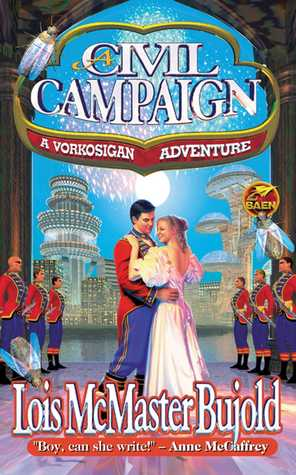

A Civil Campaign
Lois McMaster Bujold
The big groundcar jerked to a stop centimeters fromthe vehicle ahead of it, and Armsman Pym, driving, swore under his breath. Miles settled back again in his seat beside him, wincing at a vision of the acrimonious street scene from which Pym's reflexes had delivered them. Miles wondered if he could have persuaded the feckless prole in front of them that being rear-ended by an Imperial Auditor was a privilege to be treasured. Likely not. The Vorbarr Sultana University student darting across the boulevard on foot, who had been the cause of the quick stop, scampered off through the jam without a backward glance. The line of groundcars started up once more.
"Have you heard if the municipal traffic control system will be coming on line soon?" Pym asked, apropos of what Miles counted as their third near-miss this week.
"Nope. Delayed in development again, Lord Vorbohn the Younger reports. Due to the increase in fatal lightflyer incidents, they're concentrating on getting the automated air system up first."
Pym nodded, and returned his attention to the crowded road. The Armsman was a habitually fit man, his graying temples seeming merely an accent to his brown-and-silver uniform. He'd served the Vorkosigans as a liege-sworn guard since Miles had been an Academy cadet, and would doubtless go on doing so till either he died of old age, or they were all killed in traffic.
So much for short cuts. Next time they'd go around the campus. Miles watched through the canopy as the taller new buildings of the University fell behind, and they passed through its spiked iron gates into the pleasant old residential streets favored by the families of senior professors and staff. The distinctive architecture dated from the last un-electrified decade before the end of the Time of Isolation. This area had been reclaimed from decay in the past generation, and now featured shady green Earth trees, and bright flower boxes under the tall narrow windows of the tall narrow houses. Miles rebalanced the flower arrangement between his feet. Would it be seen as redundant by its intended recipient?
Pym glanced aside at his slight movement, following his eye to the foliage on the floor. "The lady you met on Komarr seems to have made a strong impression on you, m'lord..." He trailed off invitingly.
"Yes," said Miles, uninvitingly.
"Your lady mother had high hopes of that very attractive Miss Captain Quinn you brought home those times." Was that a wistful note in Pym's voice?
"Miss Admiral Quinn, now," Miles corrected with a sigh. "So had I. But she made the right choice for her." He grimaced out the canopy. "I've sworn off falling in love with galactic women and then trying to persuade them to immigrate to Barrayar. I've concluded my only hope is to find a woman who can already stand Barrayar, and persuade her to like me."
"And does Madame Vorsoisson like Barrayar?"
"About as well as I do." He smiled grimly.
"And, ah... the second part?"
"We'll see, Pym." Or not, as the case may be. At least the spectacle of a man of thirty-plus, going courting seriously for the first time in his life - the first time in the Barrayaran style, anyway - promised to provide hours of entertainment for his interested staff.
Miles let his breath and his nervous irritation trickle out through his nostrils as Pym found a place to park near Lord Auditor Vorthys's doorstep, and expertly wedged the polished old armored groundcar into the inadequate space. Pym popped the canopy; Miles climbed out, and stared up at the three-story patterned tile front of his colleague's home.
Georg Vorthys had been a professor of engineering failure analysis at the Imperial University for thirty years.